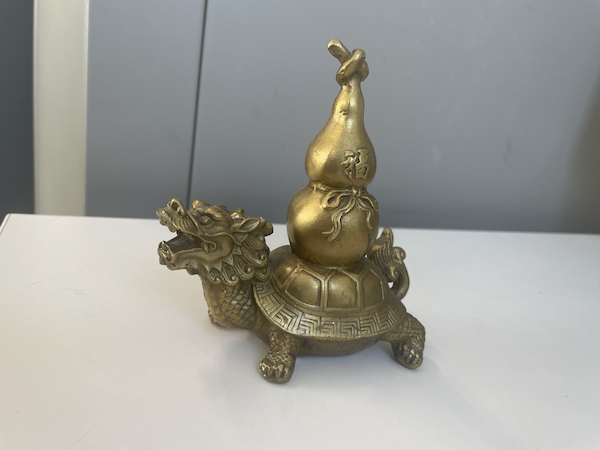
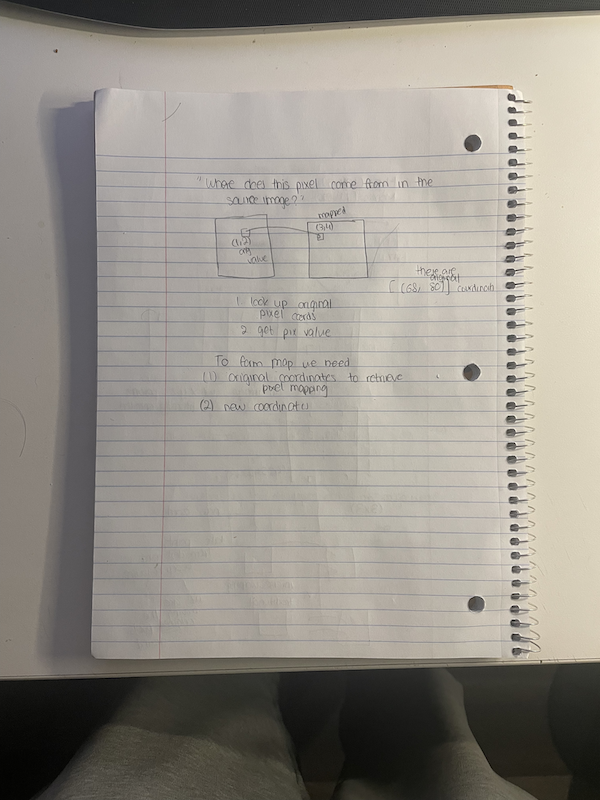
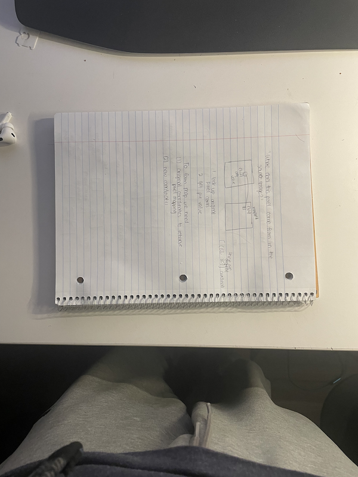
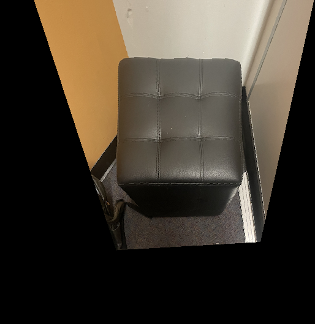
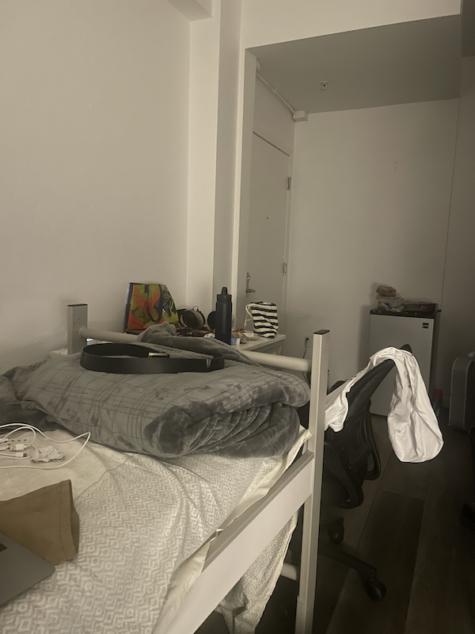
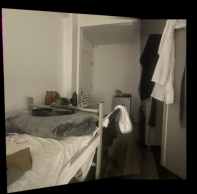

|
 |
|
|
|
|
 |
 |
def computeH(pts_src, pts_dest):
A = []
for (x_s, y_s), (x_d, y_d) in zip(pts_src, pts_dest):
A.append([x_s, y_s, 1, 0, 0, 0, -x_d * x_s, -x_d * y_s])
A.append([0, 0, 0, x_s, y_s, 1, -y_d * x_s, -y_d * y_s])
# Convert to numpy linear equation
A = np.array(A)
b = pts_dest.reshape(-1, 1)
H = (np.linalg.pinv(A.T @ A) @ A.T @ b)
return np.vstack((H, 1)).reshape(3, 3)
def warpImage(im, im_pts, H, output_shape=None):
# Get image dimensions
h, w = im.shape[:2]
# Define corners of the input image
corners = np.array([[0, 0], [w-1, 0], [w-1, h-1], [0, h-1]])
# Convert corners to homogeneous coordinates
ones = np.ones((4, 1))
corners_h = np.hstack([corners, ones])
# Warp corners to find the size of the output image
warped_corners = (H @ corners_h.T).T
warped_corners /= warped_corners[:, [2]] # Normalize by z
# Extract min and max coordinates to define output bounding box
min_x, min_y = np.min(warped_corners[:, :2], axis=0)
max_x, max_y = np.max(warped_corners[:, :2], axis=0)
if output_shape is None:
output_shape = (int(np.ceil(max_y - min_y)), int(np.ceil(max_x - min_x)))
# Generate grid of coordinates in output image
xx, yy = np.meshgrid(np.arange(-output_shape[1], output_shape[1]), np.arange(-output_shape[0], output_shape[0]))
xx_out, yy_out = np.meshgrid(np.arange(0, output_shape[1]), np.arange(0, output_shape[0]))
# Create homogeneous coordinates for the output grid
out_homog_coords = np.stack([xx.ravel(), yy.ravel(), np.ones_like(xx).ravel()], axis=1)
# print(out_homog_coords)
# Compute the inverse of the homography for inverse warping
translation_matrix = np.array([[1, 0, -min_x],
[0, 1, -min_y],
[0, 0, 1]])
H_inv = np.linalg.inv(translation_matrix @ H)
# Map output pixels to input coordinates using inverse warping
mapped_coords = (H_inv @ out_homog_coords.T).T
mapped_coords /= mapped_coords[:, [2]] # Normalize by z
x_mapped = mapped_coords[:, 0]
y_mapped = mapped_coords[:, 1]
# Current coordinates
new_coords_x = xx.ravel()
new_coords_y = yy.ravel()
print(x_mapped, y_mapped, x_mapped.shape, y_mapped.shape, out_homog_coords.T.shape)
# Mask to keep valid points within the input image bounds
valid_mask = (x_mapped >= 0) & (x_mapped < w) & (y_mapped >= 0) & (y_mapped < h)
# Interpolate the image at the mapped coordinates
im_warped = np.zeros((output_shape[0], output_shape[1], im.shape[2]), dtype=im.dtype) # Create blank output
for i in range(im.shape[2]): # Interpolate each channel
im_warped_channel = scipy.interpolate.griddata(
(new_coords_y[valid_mask], new_coords_x[valid_mask]), # input coordinates (valid only)
im[y_mapped[valid_mask].astype(int), x_mapped[valid_mask].astype(int), i], # input values
(yy_out, xx_out), # output grid
method='linear',
fill_value=0 # Fill out-of-bound pixels with 0
)
im_warped[:, :, i] = im_warped_channel
orig_points_homogeneous = np.hstack((im_pts, np.ones((im_pts.shape[0], 1))))
transformed_points = ((translation_matrix @ H) @ orig_points_homogeneous.T).T
transformed_points /= transformed_points[:, 2].reshape(-1, 1) # Normalize to get (x, y)
return im_warped, translation_matrix, transformed_points[:, :2]

Original |
 Rectified |
The rectified image wasn't initially looking like this. The changes I needed to make were to (1) rotate the image, and then (2) crop it down to remove excess black.
|
 Image 1 |

Image 2 |
 Mosaic |